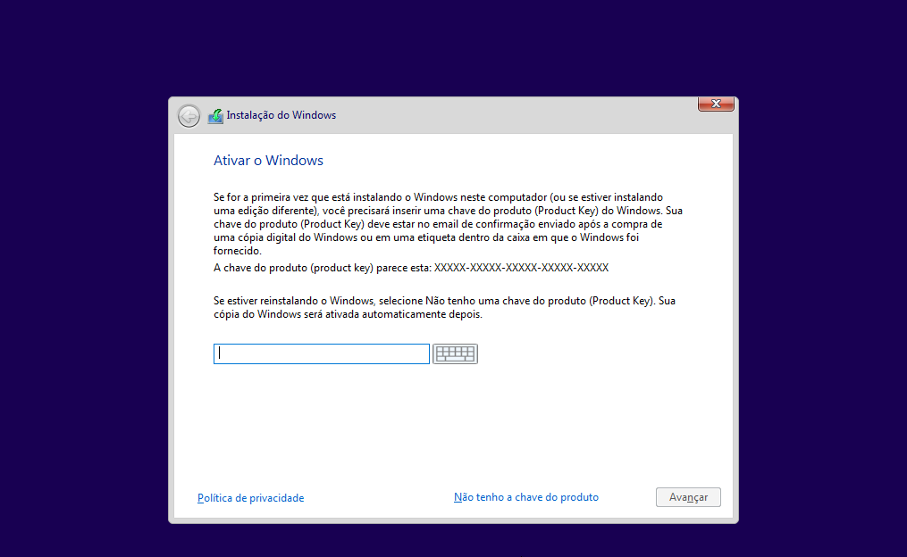

Como fazer o dual boot no Windows
Para fazer o Dual Boot do o ideal é sempre se começar pelo Windows pois, se você começar pelo Linux pode ser que o Windows não seja reconhecido, ou apresente falhas. Aqui detalharei a maioria das telas em que o usuário passará durante o processo.
Agora que você chegou aqui, você já deve ter feito o processo de baixar as imagens ".iso" na sua mídia bootável com o Ventoy, um passo importante para prosseguir é alterar a ordem de boot na BIOS do seu computador. Após isso siga esses passos para instalação.
-
Após ter selecionado a ISO do Windows 10 na tela do Ventoy, agora é hora de iniciar a instalação do Windows. A primiera tela que aparecerá será essa a seguir, nela você selecionará o seu idioma e o seu estilo de teclado, aqui eu usei o ABNT2. Feita a configuração clique em "Avançar".

-
Apenas aperte em "Instalar Agora".

-
Coloque a chave do Windows caso possua uma licença. Se quiser configura-lá depois, basta clicar em "não tenho a chave do produto".

-
Selecione a versão do Windows que desejar. Aqui estarei utilizando o Windows 10 Pro.
Se você não sabe a versão do Windows que está utilizando e deseja manter na mesma, nesse link você será redirecionado para um tutorial no site da Microsoft.

-
Basta marcar a opção "Aceito os termos de licença" e clicar em "Avançar".

-
Selecione o tipo de instalação "Personalizada" do Windows.
-
Chegando em uma tela semelhante, provavelmente se você está fazendo isso pela primeira vez, aparecerá várias partições criadas pelo seu SO, semelhante ao da imagem do passo 11. É importante para fazer a resintalação do Windows excluir todas essas partições.
Importante! Tudo (arquivos, fotos, músicas, aplicativos, entre outros) será apagado do seu HD/SSD! inclusive o próprio Sistema Operacional, esteja ciente que essa ação é irreversível e certifique-se de que tenha feito backup de todos seus aqruivos antes de prosseguir. para exclir uma partição é só selecioná-la e clicar em "Excluir". após você apagar todas as partições, você chegará em uma tela semelhante a essa.Nota: aqui você já formatou seu HD/SSD e qualquer coisa que tinha lá, agora não existe mais por isso, tenha certeza que é isso que você deseja.
-
Após o passo anterior. clique em "Novo" e um espaço aparecerá para você escolher o tamanho da partição do Windows em MB. Como aqui se trata de 50GB deixei 20000 MB (20GB aproximadamente) para o Windows. Esse valor é opcional e variável de acordo com a sua necessidade e tamanho do seu HD/SSD. Se você pretende instalar muitos aplicativos pesados no Windows reserve um espaço maior do seu HD/SSD. Clique em "Aplicar" e pronto a sua partição estará criada.

-
Chegando nessa tela você já terá feito a partição do Windows e fará agora a do Linux, selecione "Espaço não alocado" e clique em "Novo" para fazer a partição.
-
Como aqui se trata de 50GB deixei 20000 MB (20GB aproximadamente) para o Linux. Esse valor é opcional e variável de acordo com a sua necessidade e tamanho do seu HD/SSD. Se você pretende instalar muitos aplicativos pesados no Linux reserve um espaço maior do seu HD/SSD. Clique em "Aplicar" e pronto a sua partição estará criada.

-
Essa partição restante eu deixei reservada para arquivos. Ela funcionará semelhante a um pendrive, podendo colocar vários tipo de arquivos ali dentro e depois acessando-os independente do SO que você estiver utilizando. Basta selecionar "Espaço não alocado", clicar em "Novo", escolher o tamanho e "Aplicar". E pronto todo o particionamento foi concluído.
-
Aqui é muito importante você selecionar a primeira partição (a que tem o valor de armazenamento próximo a que você colocou na hora de criar a partição, aqui no caso a "Partição 2") para colocar o Windows, pois diferente disso, pode ocasionar erros, então após selcionada clique em "Avançar".
-
Pronto! Aqui seu Windows já estará instalando e basta esperar o tempo necessário para terminar a instalação, esse tempo pode variar de acordo com o seu HD/SSD.

-
Após a o término da instalação aparecerá a mensagem para reiniciar, fique tranquilo seu computador vai reinicará várias vezes durante o processo.
-
Espere nessa tela, ela pode demorar um pouco, porque o Windows está fazendo as cofigurações necessárias.
-
Após alguns minutos naquela tela, essa aparecerá e logo já partirá para as configurações.
-
Pronto! Você já pode configurar o seu Windows da forma que desejar. Selecionando o idioma

-
Selecionando o tipo de teclado.
-
Selecionando o tipo de uso.
-
Antes dessa tela, aparecerão várias outras telas, para você fazer suas configurações, nesse momento o Windows te orientará como prosseguir.
Com o Windows instalado basta irmos para o Linux e fazermos a instalação lá, para terminarmos o dual boot.